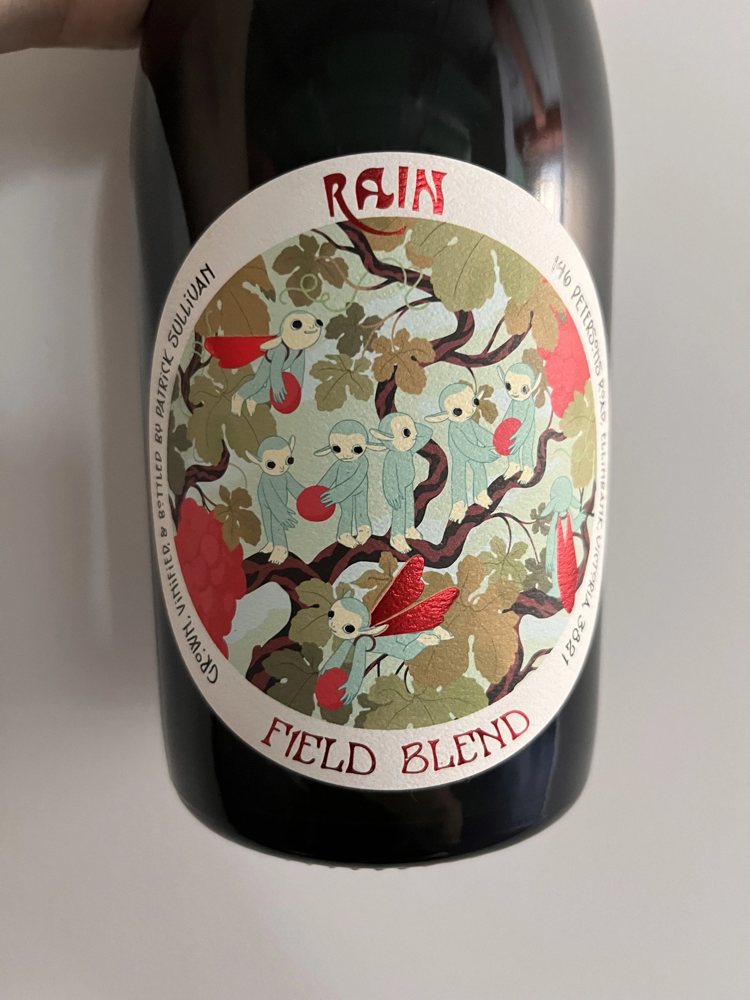
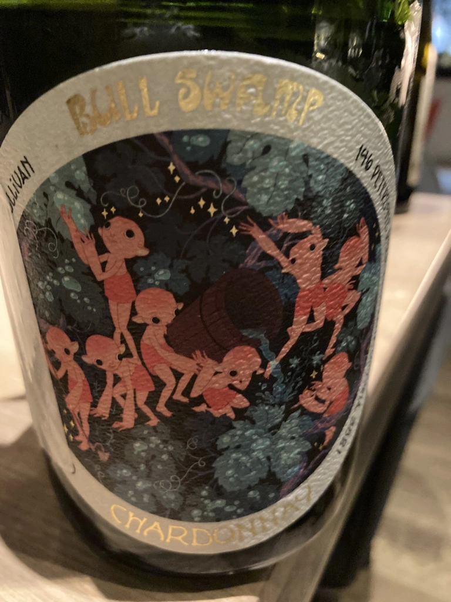
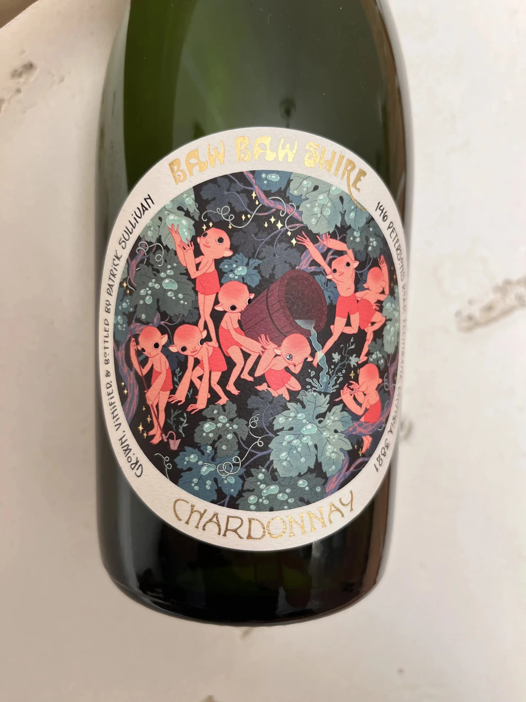
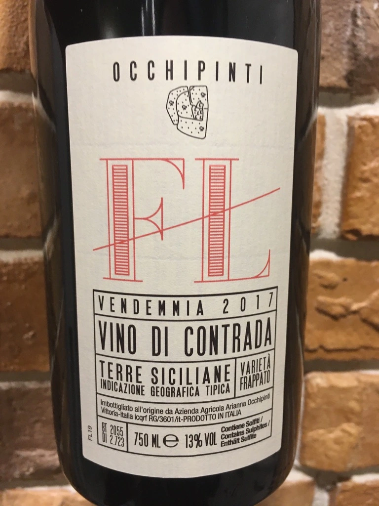
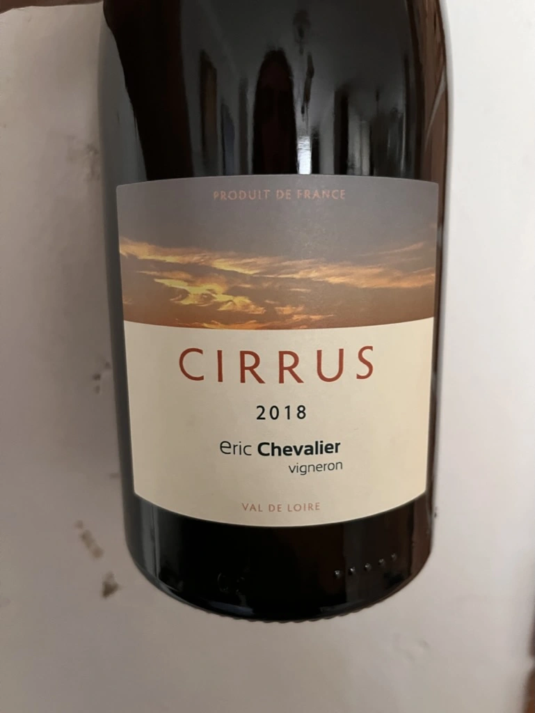
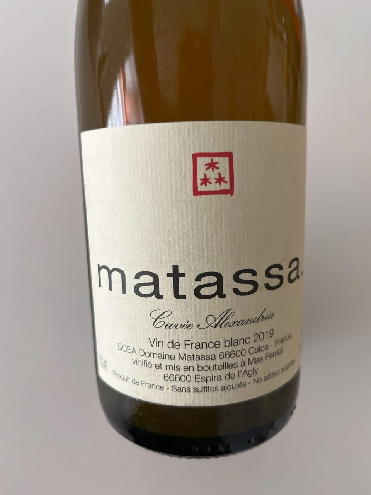
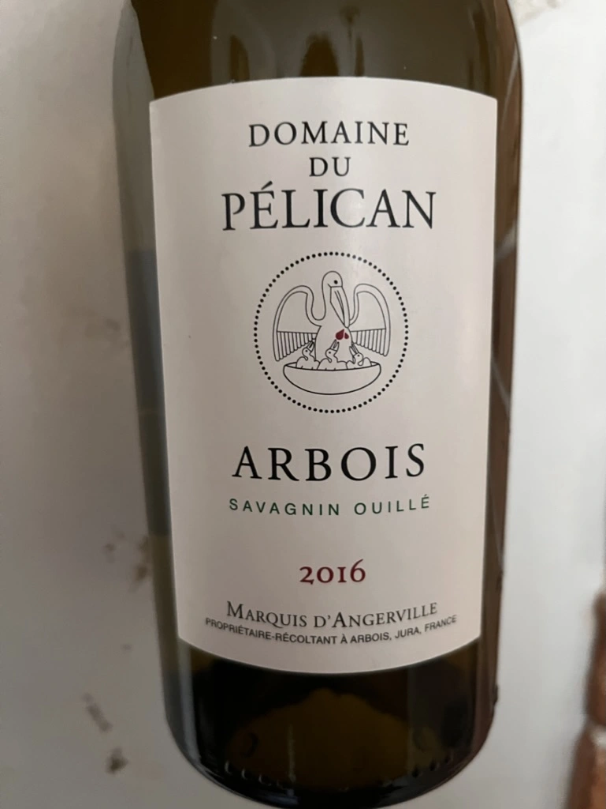
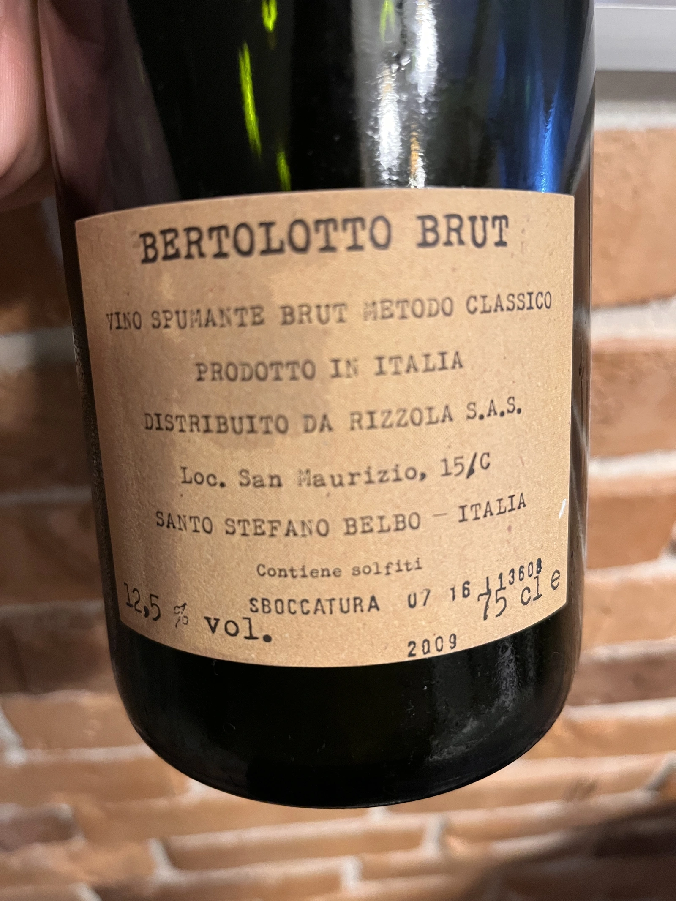
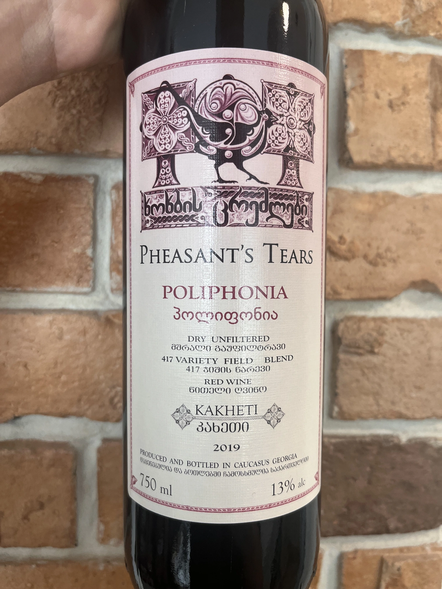

- Type
- Red Still, Dry
- Producer
- Patrick Sullivan
- Vintage
- 2019
- Location
- Australia, Gippsland
- Grapes
- Cabernet Franc, Pinot Grigio
- Alcohol
- 13
- Sugar
- 0
- Price
- 1103 UAH, 1150 UAH
- Cellar
- N/A
Made of 30-40 years old vines. The Cabernet Franc is fermented using carbonic maceration and the Pinot Gris is fermented on skins in stainless steel for one month. All wines are then transferred to puncheon to settle out and come together.
Producer
Patrick Sullivan works with his wife Megan in Yarra Valley to produce authentic wines on their farm in the Strezleki ranges, Baw Baw Shire, Gippsland, Australia. Patrick portrays himself as a farmer and not a winemaker. His vines are pure, intriguing and honest. His labels are catchy. Don’t believe me? Just take a closer look!
I do not put myself in the category of Natural Wines. I only make wine. Natural Wine is a constructed term that I do not like very much. I make wine in the way I like it and in the style that I like to drink and I do not feel better than someone who acidifies or uses selected yeasts. I do not do it because I do not like it. I do it differently.
Patrick Sullivan
Patrick’s path to winemaking began at a young age. Some say that at age of 12, he spent time planting vines during the school break. His personal site says that his first vinous “whiff” came whilst climbing the hills on a farm his family once owned. In any case, this initial spark developed into fascination and determination. So after finishing high school, Patrick spent two years travelling in Europe to learn winemaking techniques. His love for the craft only grew, so once he returned to his homeland, he studied botany and actuarial science. After post-graduate, Patrick wanted to learn from somebody. And so he went on to gain invaluable experience by working alongside respected winemakers (such as Stuart Proud, William Downie, Anna Martens and Eric Narioo) in various organically and biodynamically managed vineyards in Victoria.
After some time, he gained enough experience, knowledge and confidence to start own projects.
See Jumping Juice.
Ratings
2021-05-27 - 8.00
Unexpectedly well structured and easy going ‘natural’ wine, with wonderful and not simple bouquet of overripe plum, pomegranate, ripe strawberry, underbrush and red flowers. Light, delicious and well balanced.
2022-07-05 - 8.00
Incredible as always. I enjoy this style of wine in between light red and rich rosé. Rain is a subtle story. Forest berries compote, white pepper, pomegranate, underbrush and red flowers. Almost perfectly balanced, juicy and delicious. I would drink this wine every day. Casually.
Tasted as part of Mixed Bag Vol. 1.
Related







